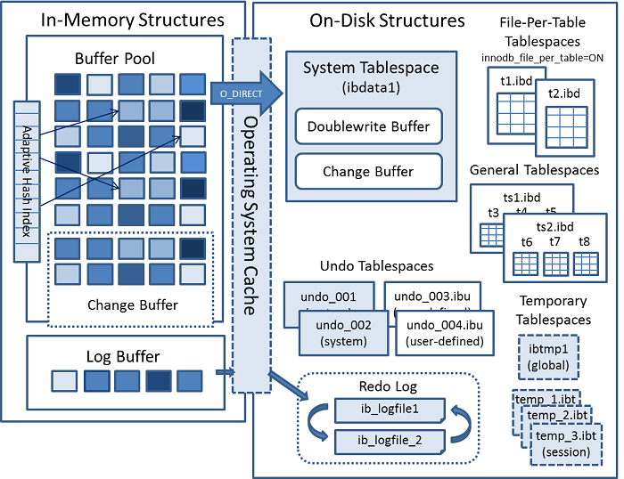
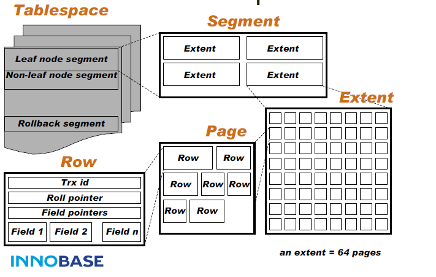

Ch02-MySQL 之 InnoDB 内存结构和存储结构
March 15, 2018
InnoDB 的内存结构主要由 Buffer Pool, Change Buffer, Adaptive Hash Index, Log Buffer 这几个部分组成，而存储结构则是由若干种不同的 Tablespace 组成。如下图所示。

1. InnoDB 内存结构 #
| 条目 | 说明 |
|---|---|
| Buffer Pool | 也称为读缓存，以 page 为单位缓存数据，使用改进过的 LRU 算法进行淘汰 |
| Change Buffer | 也称为写缓存，对 page 进行了修改，先缓存到这里，后续 merge 后统一写入到磁盘 |
| Adaptive Hash Index | 简写为AHI，它可以简单理解为定制版索引，当访问某些 Page 非常频繁的时候，则为该 Page 建立索引 |
| Log Buffer |
2. InnoDB 存储结构 #

上图描述的是 General Tablespaces 和 File-Per-Table Tablespaces 的内部组织形式。
2.1 Tablespaces #
| 条目 | 说明 |
|---|---|
| System Tablespaces | 包含 innodb 相关对象的元数据，doublewrite buffer, change buffer, undo logs 等 |
| File-Per-Table Tablespaces | .idb 文件，是一个单表表空间，该表创建于自己的数据文件中，而非创建于系统表空间中 |
| Undo Tablespaces | .ibu 文件，由一个或多个包含 undo 日志的文件组成 |
| General Tablespaces | .idb 文件，通过 create tablespace 语法创建的共享表空间 |
| Temporary Tablespaces | .ibt 文件，用户创建的临时表和磁盘内部临时表创建于共享临时表空间中 |
2.2 Segment #
是一个逻辑概念，并不对应任何一个连续的空间物理区域，它主要被用来区分不同功能的 Extent，和碎片区中的 Page。常见的有“叶子节点段 (non-leaf node segment)，“非叶子节点段 (leaf node segment)”等。
备注： 非叶子节点段 和 叶子节点段 对应 B+ 树中的非叶子节点和叶子节点。
- 非叶子节点段：存储和管理索引树
- 叶子节点段：存储和管理实际数据
2.3 Extent #
固定大小，为 1MB，存放 64 个地址连续的 Page。
这里有个小细节，在初次创建的表的时候，仅仅会创建包含 7 个 Page 的 Extent，而不是 64 个 Page 的完整 Extent，这些 Page 会被保存在碎片区中。随着数据的增加，则会申请包含 64 个 Page 的 新的 Extent。
256 个 Extent 组成一个 Extent Group，其大小为 256MB。
2.4 Page #
Page 是 InnoDB 存储引擎磁盘管理的最小单位，固定大小，为 16 KB。页有很多不同的分类，常见的大概有如下几种。
| 条目 | 说明 |
|---|---|
| FIL_PAGE_TYPE_ALLOCATED | 最新分配，还未使用 |
| FIL_PAGE_UNDO_LOG | undo 日志页 |
| FIL_PAGE_INODE | 存储 Segment 的信息 |
| FIL_PAGE_IBUF_FREE_LIST | Change Buffer 空闲列表 |
| FIL_PAGE_IBUF_FREE_BITMAP | Change Buffer 的一些属性 |
| FIL_PAGE_TYPE_SYS | 存储一些系统属性 |
| FIL_PAGE_TYPE_XDES | 存储 Extent 的信息 |
| FIL_PAGE_TYPE_TRX_SYS | 存储事务相关的系统数据 |
| FIL_PAGE_TYPE_FSP_HDR | 表空间头部信息 |
| FIL_PAGE_INDEX | 索引页，或者常说的数据页 |
2.5 Row #
Row 支持 4 种格式，不定大小，最大长度为 8KB，
| 条目 | 说明 |
|---|---|
| REDUNDANT | |
| COMPACT | |
| DYNAMIC | 默认类型， |
| COMPRESSED |